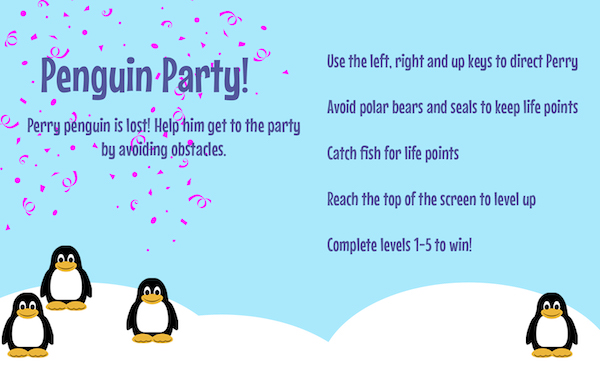
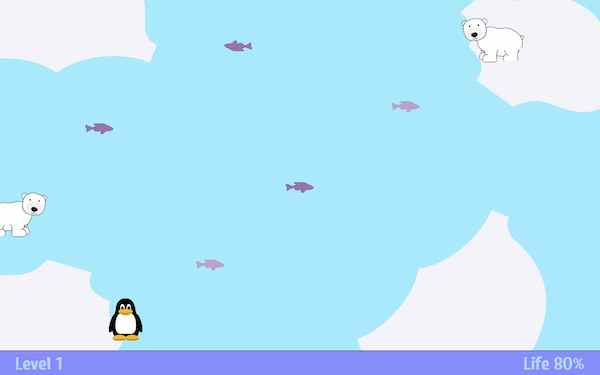

Penguin Party!
Documentation:
Process
I started my process by gathering the images, background and sounds I knew I would need or wanted to include. I created all of my backgrounds in Photoshop and also created the sprites using clip art and Photoshop. I knew I wanted a sound for when Perry ran into an enemy and a sound for catching fish. Later I added a losing sound and a winning sound, as well as a level up sound. I approched this project by going scene by scene and creating the code logically from there. I also found that writing down the flow I wanted my game to have helped me quite a bit. I began with the start scene and learned the hard way that it was much easier to create backgrounds that held the words and labels I needed instead of coding them in JS. After the start scene I stopped doing that. I ran into some issues where the level and life numbers wouldn't reset so that took some trial and error. One thing I wish I had time to improve is the accuracy of the intersection between Perry and the predators. I would also like to add more levels eventually and other obstacles as the game progresses, I restrained from doing that now because I didn't want it to be too difficult for a family game. I used the Circle Blast homework and instructions as a reference for this assignment, w3schools, as well as the PIXI tutorial videos that were suggested, and I looked at past projects for inspiration in choosing my idea and theme.
Resources
Proposal:
Concept Summary and Genre
The user will play as a penguin trying to get to a penguin party. The penguin will slide around the screen catching fish for life points, dodge predators that will cause the penguin to lose life points and avoid icebergs and other obstacles along the way. This could be classified as a racing/family game.
Platform
My game will be created for desktop only.
Story/Theme
The story behind my game will be that there is a lost penguin trying to get to his friends penguin party. The user has to help him avoid polar bears and seals, while also catching enough fish to fuel him for his journey. There will be obstacles along the path that will cause the penguins journey to be interrupted. His journey will get progressively harder the closer he gets to the party. The mood for this game will be playful and exciting. The premise and player motivation of the game is to reunite the penguin with his friends and help him get home to the penguin party.
Style
My graphics style will be cartoonish and fun. The background sound will be looped, exciting, fun and motivating music. There will be a sound effect for when the penguin comes in contact with a predator and when they catch a fish. The background music may also change when the user completes the game successfully.
Mechanics/Gameplay
The player will have to choose which obstacles are worth the risk or not. Certain predators will cause more damage than others and certain fish will increase health more than others. The player will learn how to play the game via instructions on the opening screen before they start. They will also be informed then how to beat the game.
Controls
The user will control the penguin with the right and left arrow keys. They will be able to go left and right and possiblily forward with the up key if the game ends up requiring it.
Mock Ups
 About the developer
Hi! My name is Allie Maus. I'm a second year New Media Interactive Development major and I'm minoring in Advertising and Public Relations. My interests outside of academics include reading, yoga, and dance. My skill set and academic interests are programming, probelm solving, developing web and mobile applications, sociology, art history and literature.